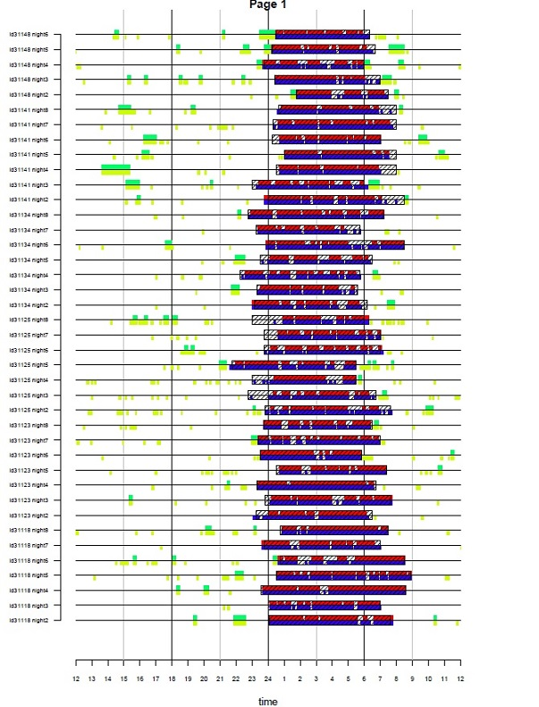

NOTE: If you are viewing this page via CRAN note that the main GGIR documentation has been migrated to the GGIR GitHub pages.
GGIR generates the following types of output:
- csv-spreadsheets with all the variables you need for physical activity, sleep and circadian rhythm research
- .png images with on each image a low time resolution plot of the data per file and quality indicators
- .RData files with milestone data
- Pdfs with a visual summary of the physical activity and sleep patterns as identified (see example below)
GGIR Part 1
GGIR part 1, only outputs RData files which are used by GGIR part 2. The RData files are not intended for direct use by the GGIR user.
GGIR Part 2
Part 2 generates the following output:
- part2_summary.csv: Person level summary (see below)
- part2_daysummary.csv: Day level summary (see below)
- QC/data_quality_report.csv: Overview of calibration results and whether or not a file was corrupt or too short to be processed,
- QC/plots_part2: A folder with .png files holding a visualisation of the acceleration time series in 15 minute resolution and with invalid data segments highlighted in colours (yellow: non-wear based on standard deviation threshold, brown: non-wear after extra filtering step (introduced in 2013), and purple: clipping)
Person level summary (csv)
| (Part of) variable name | Description |
|---|---|
| ID | Participant id |
| device_sn | Device serial number |
| bodylocation | Body location extracted from file header |
| filename | Name of the data file |
| start_time | Timestamp when recording started |
| startday | Day of the week on which recording started |
| samplefreq | Sample frequency (Hz) |
| device | Accelerometer brand, e.g. GENEACtiv |
| clipping_score | The Clipping score: Fraction of 15 minute windows per file for which the acceleration in one of the three axis was close to the maximum for at least 80% of the time. This should be 0. |
| meas_dur_dys | Measurement duration (days) |
| complete_24hcycle | Completeness score: Fraction of 15 minute windows per 24 hours for which no valid data is available at any day of the measurement. |
| meas_dur_def_proto_day | measurement duration according to protocol (days): Measurement duration (days) minus the hours that are ignored at the beginning and end of the measurement motivated by protocol design |
| wear_dur_def_proto_day | wear duration duration according to protocol (days): So, if the protocol was seven days of measurement, then wearing the accelerometer for 8 days and recording data for 8 days will still make that the wear duration is 7 days |
| nonwear_hours_filtered | Total number of nonwear hours filtered, only stored when using
parameter nonwearFiltermaxHours
|
| nonwear_events_filtered | Total number of nonwear events filtered, only stored when using
parameter nonwearFiltermaxHours
|
| calib_err | Calibration error (static estimate) Estimated based on all ‘non-movement’ periods in the measurement after applying the autocalibration. |
| calib_status | Calibration status: Summary statement about the status of the calibration error minimisation |
| n hours ignored at start of meas (if data_masking_strategy=1, 3 or 5) | number of hours ignored at the start of the measurement (if
data_masking_strategy = 1) or at the start of the
ndayswindow (if data_masking_strategy = 3 or 5) A log of
decision made in part2.R |
| n hours ignored at end of meas (if data_masking_strategy=1, 3 or 5) | number of hours ignored at the end of the measurement (if
data_masking_strategy = 1) or at the end of the ndayswindow
(if data_masking_strategy = 3 or 5). A log of decision made in
part2.R |
| n days of measurement after which all data is ignored (if data_masking_strategy=1) | number of days of measurement after which all data is ignored (if data_masking_strategy = 1, 3 or 5) A log of decision made in part2.R |
| epoch size to which acceleration was averaged (seconds) | A log of decision made in part1.R |
| data_masking_strategy | A log of the decision made when calling g.impute: value=1 mean ignore specific hours; value=2 mean ignore all data before the first midnight and after the last midnight |
Letter codes to indicate aggregation type
| (Part of) variable name | Description |
|---|---|
AD_ |
All days (plain average of all available days, no weighting). The variable was calculated per day and then averaged over all the available days |
WE_ |
Weekend days (plain average of all available days, no weighting). The variable was calculated per day and then averaged over weekend days only |
WD_ |
Week days (plain average of all available days, no weighting). The variable was calculated per day and then averaged over week days only |
WWE_ |
Weekend days (weighted average) The variable was calculated per day and then averaged over weekend days. Double weekend days are averaged. This is only relevant for experiments that last for more than seven days. |
WWD_ |
Week days (weighted average) The variable was calculated per day and then averaged over week days. Double week days were averaged. This is only relevant for experiments that last for more than seven days) |
Distribution of acceleration
| (Part of) variable name | Description |
|---|---|
| ENMO_fullRecordingMean | ENMO is the main summary measure of acceleration. The value presented is the average ENMO over all the available data normalised per 24-hour cycles (diurnal balanced), with invalid data imputed by the average at similar time points on different days of the week. In addition to ENMO it is possible to extract other acceleration metrics (i.e. BFEN, HFEN, HFENplus). We emphasize that it is calculated over the full recording because the alternative is that a variable is only calculated overmeasurement days with sufficient valid hours of data. |
| ENMO | (only available if set to true in part1.R) ENMO is the main summary measure of acceleration. The value presented is the average ENMO over all the available data normalised per 24 hour cycles, with invalid data imputed by the average at similar timepoints on different days of the week. In addition to ENMO it is possible to extract other acceleration metrics in part1.R (i.e. BFEN, HFEN, HFENplus) See also van Hees PLoSONE April 2013 for a detailed description and comparison of these techniques. |
| pX_A_mg_0-24h_fullRecording | This variable represents the Xth percentile in the distribution of short epoch metric value A of the average day. The average day may not be ideal for describing the distribution. Therefore, the code also extracts the following variable. |
| AD_pX_A_mg_0-24h | This variable represents the Xth percentile in the distribution of short epoch metric value A per day averaged across all days. |
| WWD_MVPA_E5S_T100_ENMO | Time spent in moderate-to-vigorous based on 5 second epoch size and an ENMO metric threshold of 100 |
WWE_MVPA_E5S_B1M80%_T100_ENMO |
Time spent in moderate-to-vigorous based on a bout criteria of at
least 1 minute where 80% or more of the 5 second epochs are expected to
meet the threshold criteria of of 100 mg based on acceleration metric
ENMO (threshold is specified with parameter
mvpathreshold) |
WE_[100, 150)_mg_0-24h_ENMO |
Time spent between (and including) 100 mg and 150 (excluding 150 itself) between 0 and 24 hours (the full day) using metric ENMO data exclusion data_masking_strategy (value=1, ignore specific hours; value=2, ignore all data before the first midnight and after the last midnight) |
_MVPA_E5S_B1M80_T100 |
MVPA calculated based on 5 second epoch setting bout duration 1 Minute and inclusion criterion of more than 80 percent. |
_ENMO_mg |
ENMO or other metric was first calculated per day and then average according to AD, WD, WWE, WWD |
Circadian rhythm: MXLX, IV, and IS
| (Part of) variable name | Description |
|---|---|
| L5_A_mg_0-24 | Average of metric A during the least active five* hours in the day
that is the lowest rolling average value of metric A. (* window size is
modifiable by argument winhr) |
| M5_A_mg_0-24 | Average of metric A during the most active five* hours in the day
that is the lowest rolling average value of metric A. (* window size is
modifiable by argument winhr) |
| L5hr_A_mg_0-24 | Starting time in hours and fractions of hours of L5_A_mg_0-24, where hours below 12 are incremented with 24 to create a continuous scale throughout the night (e.g. 36 = 6am) in line with numeric timeing of sleep variables in GGIR part 4 output. |
| M5hr_A_mg_0-24 | Starting time in hours and fractions of hours of M5_A_mg_0-24 |
| ig_gradient_ENMO_0 -24hr_fullRecording | Intensity gradient calculated over the full recording. |
| 1to6am_ENMO_mg | Average metric value ENMO between 1am and 6am |
| N valid weekdays (WD) | Number of valid weekend days |
| N valid weekend days (WE) | Number of valid week days |
| IS | Interdaily stability as dicussed in chapter 13 |
| IV | Intradaily variability as dicussed in chapter 13 |
| phi | Indicator of auto-correlation in acceleration time series over multiple days, see chapter 13 for details. |
| SSP | Method for describing time series, see chapter 13 for details. |
| ABI | ABI measures how the activity over the observed period is balanced, see chapter 13 for details. |
Circadian rhythm: Cosinor
The following variables in the GGIR output are derived by the ActCR package, the documentation has been copied from ActCR documentation.
| Variable name | Description |
|---|---|
| cosinor_mes | MESOR which is short for midline statistics of rhythm, which is a rhythm adjusted mean. This represents mean activity level. |
| cosinor_amp | amplitude, a measure of half the extend of predictable variation within a cycle. |
| This represents the highest activity one can achieve | |
| cosinor_acrophase | acrophase, a measure of the time of the overall high values recurring in each |
| cycle. Here it has a unit of radian. This represents time to reach the peak. | |
| cosinor_acrotime | acrotime represents time to reach the peak. |
| cosinor_ndays | Number of days modeled |
| cosinorExt_minimum | Minimum value of the of the function. |
| cosinorExt_amp | amplitude, a measure of half the extend of predictable variation within a cycle. This represents the highest activity one can achieve. |
| cosinorExt_alpha | It determines whether the peaks of the curve are wider than the troughs: when alpha is small, the troughs are narrow and the peaks are wide; when alpha is large, the troughs are wide and the peaks are narrow. |
| cosinorExt_beta | It dertermines whether the transformed function rises and falls more steeply than the cosine curve: large values of beta produce curves that are nearly square waves. |
| cosinorExt_acrotime | acrophase is the time of day of the peak in the unit of the time (hours) |
| cosinorExt_UpMesor | Time of day of switch from low to high activity. Represents the timing of the rest- activity rhythm. Lower (earlier) values indicate increase in activity earlier in the day and suggest a more advanced circadian phase. |
| cosinorExt_DownMesor | Time of day of switch from high to low activity. Represents the timing of the rest-activity rhythm. Lower (earlier) values indicate decline in activity earlier in the day, suggesting a more advanced circadian phase. |
| cosinorExt_MESOR | A measure analogous to the MESOR of the cosine model (or half the deflection of the curve) can be obtained from mes=min+amp/2. However, it goes through the middle of the peak, and is therefore not equal to the MESOR of the cosine model, which is the mean of the data. |
| cosinorExt_ndays | Number of days modeled. |
| cosinorExt_F_pseudo | Measure the improvement of the fit obtained by the non-linear estimation of the transformed cosine model |
Additionally, GGIR derives:
| Variable name | Description |
|---|---|
| cosinor_timeOffsetHours | (Only used for code development purposes) Time offset in hours between midnight and the start of the time series used for cosinor analysis |
| cosinor_R2 | Squared correlated coefficient between fitted and log-transformed original time series. |
| cosinorExt_R2 | Squared correlated coefficient between fitted and log-transformed original time series. |
cosinorIV |
Cosinor analysis compatible estimate of the Intradaily Variability (IV) |
cosinorIS |
Cosinor analysis compatible estimate of Interdaily Stability (IS) |
Day level summary (csv)
This is a non-exhaustive list, because most concepts have been explained in summary.csv
| (Part of) variable name | Description |
|---|---|
| ID | Participant id |
| filename | Name of the data file |
| calender_date | Timestamp and date on which measurement started |
| bodylocation | Location of the accelerometer as extracted from file header |
| N valid hours | Number of hours with valid data in the day |
| N hours | Number of hours of measurement in a day, which typically is 24, unless it is a day on which the clock changes (DST) resulting in 23 or 25 hours. The value can be less than 23 if the measurement started or ended this day |
| weekday | Name of weekday |
| measurement | Day of measurement Day number relative to start of the measurement |
| L5hr_ENMO_mg_0-24h | Hour on which L5 starts for these 24 hours (defined with metric ENMO), on a continuous scale relative to the preceding midnight such that 2am is 26 and 6am is 30 |
| L5_ENMO_mg_0-24h | Average acceleration for L5 (defined with metric ENMO) |
[A,B)_mg_0-24h_ENMO |
Time spent in minutes between (and including) acceleration value A in mg and (excluding) acceleration value B in mg based on metric ENMO |
| ig_gradient_ENMO_0-24hr | Gradient from intensity gradient analysis proposed by Rowlands et al. 2018 based on metric ENMO for the time segment 0 to 24 hours |
| ig_intercept_ENMO_0-24hr | Intercept from intensity gradient analysis proposed by Rowlands et al. 2018 based on metric ENMO for the time segment 0 to 24 hours |
| ig_rsquared_ENMO_0-24hr | r squared from intensity gradient analysis proposed by Rowlands et al. 2018 based on metric ENMO for the time segment 0 to 24 hours |
Data_quality_report (csv)
The data_quality_report.csv is stored in subfolder folder results/QC.
| (Part of) variable name | Description |
|---|---|
| filename | file name |
| file.corrupt | Is file corrupt? TRUE or FALSE (mainly tested for GENEActiv bin files) |
| file.too.short | File too short for processing? (definition) TRUE or FALSE |
| use.temperature | Temperature used for auto-calibration? TRUE or FALSE |
| scale.x | Auto-calibration scaling coefficient for x-axis (same for y and z axis, not shown here) |
| offset.x | Auto-calibration offset coefficient for x-axis (same for y and z axis, not shown here) |
| temperature.offset.x | Auto-calibration temperature offset coefficient for x-axis (same for y and z axis, not shown here) |
| cal.error.start | Calibration error prior to auto-calibration |
| cal.error.end | Calibration error after auto-calibration |
| n.10sec.windows | Number of 10 second epochs used as sphere data in auto-calibration |
| n.hours.considered | Number of hours of data considered for auto-calibration |
| QCmessage | Character QC message at the end of the auto-calibration |
| mean.temp | Mean temperature in sphere data |
| device.serial.number | Device serial number |
| NFilePagesSkipped | (Only for Axivity .cwa format) Number of raw data blocks skipped |
| filehealth_totimp_min | (Only for Axivity .cwa, ActiGraph gt3x, and ad-hoc csv format) Total number of minutes of raw data imputed |
| filehealth_checksumfail_min | (Only for Axivity .cwa format) Total number of minutes of raw data where the checksum failed |
| filehealth_niblockid_min | (Only for Axivity .cwa format) Total number of minutes of raw data with non-incremental block ids |
| filehealth_fbias0510_min | (Only for Axivity .cwa format) Total number of minutes with a sampling frequency bias between 5 and 10% |
| filehealth_fbias1020_min | (Only for Axivity .cwa format) Total number of minutes with a sampling frequency bias between 10 and 20% |
| filehealth_fbias2030_min | (Only for Axivity .cwa format) Total number of minutes with a sampling frequency bias between 20 and 30% |
| filehealth_fbias30_min | (Only for Axivity .cwa format) Total number of minutes with a sampling frequency bias higher than 30% |
| filehealth_totimp_N | (Only for Axivity .cwa, ActiGraph gt3x, and ad-hoc csv format) Total number of data blocks that were imputed |
| filehealth_checksumfail_N | (Only for Axivity .cwa format) Total number of blocks where the checksum failed |
| filehealth_niblockid_N | (Only for Axivity .cwa format) Total number of raw data blocks with non-incremental block ids |
| filehealth_fbias0510_N | (Only for Axivity .cwa format) Total number of raw data blocks with a sampling frequency bias between 5 and 10% |
| filehealth_fbias1020_N | (Only for Axivity .cwa format) Total number of raw data blocks with a sampling frequency bias between 10 and 20% |
| filehealth_fbias2030_N | (Only for Axivity .cwa format) Total number of raw data blocks with a sampling frequency bias between 20 and 30% |
| filehealth_fbias30_N | (Only for Axivity .cwa format) Total number of raw data blocks with a sampling frequency bias higher than 30% |
GGIR Part 3
GGIR part 3, only outputs RData files which are used by GGIR part 4 and 5. The RData files are not intended for direct use by the GGIR user.
GGIR Part 4
Part 4 generates the following output:
Night level summaries (csv)
- part4_nightsummary_sleep_cleaned.csv
- QC/part4_nightsummary_sleep_full.csv
The latter with ‘_full’ in the name is intended to aid clarifying why some nights (if any) are excluded from the cleaned summary report. Although, nights where the accelerometer was not worn at all are excluded from this. So, if you have a 30 day recording where the accelerometer was not worn from day 7 onward then you will not find the last 22 nights in either csv-report.
The csv. files contain the variables as shown below.
| (Part of) variable name | Description |
|---|---|
| ID | Participant ID extracted from file |
| night | Number of the night in the recording |
| sleeponset | Detected onset of sleep expressed as hours since the midnight of the previous night. |
| wakeup | Detected waking time (after sleep period) expressed as hours since the midnight of the previous night. |
| SptDuration | Difference between onset and waking time. |
| sleepparam | Definition of sustained inactivity by accelerometer. |
| guider | guider used as discussed in paragraph Sleep analysis. |
| guider_onset | Start of Sleep Period Time window derived from the guider. |
| guider_wake | End of Sleep Period Time window derived guider. |
| guider_SptDuration | Time SPT duration derived from guider_wake and guider_onset. |
| error_onset | Difference between sleeponset and guider_onset |
| error_wake | Difference between wakeup and guider_wake |
| fraction_night_invalid | Fraction of the night (noon-noon or 6pm-6pm) for which the data was invalid, e.g. monitor not worn or no accelerometer measurement started/ended within the night. |
| SleepDurationInSpt | Total sleep duration, which equals the accumulated nocturnal sustained inactivity bouts within the Sleep Period Time. |
| duration_sib_wakinghours | Accumulated sustained inactivity bouts during the day. These are the periods we would label during the night as sleep, but during the day they form a subclass of inactivity, which may represent day time sleep or wakefulness while being motionless for a sustained period of time |
| number_sib_sleepperiod | Number of nocturnal sleep periods, with nocturnal referring to the Sleep Period Time window. |
| duration_sib_wakinghours_atleast15min | Same as duration_sib_wakinghours, but limited to SIBs that last at least 15 minutes. |
| num ber_sib_wakinghours | Number of sustained inactivity bouts during the day, with day referring to the time outside the Sleep Period Time window. |
| sleeponset_ts | sleeponset formatted as a timestamp |
| wakeup_ts | wakeup formatted as a timestamp |
| guider_onset_ts | guider_onset formatted as a timestamp |
| guider_wake_ts | guider_wake formatted as a timestamp |
| daysleeper | If 0 then the person is a nightsleeper (sleep period did not overlap with noon) if value=1 then the person is a daysleeper (sleep period did overlap with noon) |
| weekday | Day of the week on which the night started |
| calendardate | Calendar date on which the night started in day/month/year format. |
| filename | Name of the accelerometer file |
| cleaningcode | see paragraph Cleaningcode |
| sleeplog_used | Whether a sleep log was used (TRUE/FALSE) |
| acc_available | Whether accelerometer data was available (TRUE/FALSE). |
| WASO | Wake After Sleep Onset: SptDuration - SleepDurationInSpt |
| SptDuration | Sleep Period Time window duration: wakeup - sleeponset |
| error_onset | Difference between sleeponset and guider_onset (this variable is only available in the full report as stored in the QC folder) |
| error_wake | Difference between wakeup and guider_wake (this variable is only available in the full report as stored in the QC folder) |
| SleepRegularityIndex1 | The Sleep Regularity Index inspired by Phillips et al. 2017, but calculated per day-pair to enable user to study patterns across days, and calculated based on sustained inactivity bouts. See Chapter 10 for details. |
| SriFractionValid | Fraction of the 24 hour period that was valid in both current as well as in matching timestamps for the next calendar day. See GGIR function manual for details |
| nonwear_perc_spt | Non-wear percentage during the spt hours of this day. This is a copy
of the nonwear_perc_spt calculated in part 5, only included
in part 4 reports if part 5 has been run with timewindow = WW |
Non-default variables in part 4 csv report
These additional are only stored if you used a sleeplog that captures
time in bed, or when using guider HorAngle for hip-worn accelerometer
data. If either of these applies set argument
sleepwindowType to “TimeInBed”.
| (Part of) variable name | Description |
|---|---|
| guider_inbedStart | Time of getting in bed |
| guider_inbedEnd | Time of getting out of bed |
| guider_inbedDuration | Time in Bed: guider_inbedEnd - guider_inbedStart |
| sleepefficiency | Sleep efficiency, calculated by one of two metrics as controlled by
argument sleepefficiency.metric: SleepDurationInSpt /
guider_inbedDuration (default) or SleepDurationInSpt / (SptDuration +
latency) |
| sleeplatency | Sleep latency, calculated as: sleeponset - guider_inbedStart |
| guider_corrected | When using the guider correction algortihm with parameter
guider_cor_do this output variable can have the following
values: 0 means that the guider was not correct;
1 indicates that only basic expansion with neighboring
windows was applied as done by step 4 of the algorithm;
2 indicates that main guider window was changes as done
by step 3 of the algorithm, and; 3 indicates that both
the main guider window was changed and the window was expanded. |
Person level summaries (csv)
- part4_summary_sleep_cleaned.csv
- QC/part4_summary_sleep_full.csv
In the person level report the variables are derived from the variables in the night level summary. Minor extensions to the variable names explain how variables are aggregated across the days. Please find below extra clarification on a few of the variable names for which the meaning may not be obvious:
| (Part of) variable name | Description |
|---|---|
_mn |
mean across days |
_sd |
standard deviation across days |
_AD |
All days |
_WE |
Weekend days |
_WD |
Week days |
| sleeplog_used | Whether a sleeplog was available (TRUE) or not (FALSE) |
| sleep_efficiency_after_onset | Accelerometer derived sleep efficiency within the sleep period time calculated as the ratio between acc_SleepDurationInSpt and guider_SptDuration (denominator) or acc_SleepDurationInSpt and acc_SptDuration + latency (denominator), as defined with sleepefficiency.metric. Only available at person level, because at night level the user can calculate this from existing variables. |
| n_nights_acc | Number of nights of accelerometer data |
| n_nights_sleeplog | Number of nights of sleeplog data. |
| n_nights_markerbutton | Only stored when parameter consider_marker_button is
set to TRUE, reflecting the number of valid nights with marker button
data. |
| n_WE_nights_complete | Number of weekend nights complete which means both accelerometer and estimate from guider. |
| n_WD_nights_complete | Number of weekday nights complete which means both accelerometer and estimate from guider. |
| n_WEnights_daysleeper | Number of weekend nights on which the person slept until after noon. |
| n_WDnights_daysleeper | Number of weekday nights on which the person slept until after noon. |
| duration_sib_wakinghour | Total duration of sustained inactivity bouts during the waking hours. |
| number_sib_wakinghours | Number of sustained inactivity bouts during the waking hours. |
| average_dur_sib_wakinghours | Average duration of the sustained inactivity bouts during the day (outside the sleep period duration). Calculated as duration_sib_wakinghour divided by number_sib_wakinghours per day, after which the mean and standard deviation are calculated across days. |
Visualisation (pdf)
Visualisation to support data quality checks: - visualisation_sleep.pdf (optional)
When input argument do.visual is set to TRUE GGIR can
show the following visual comparison between the time window of being
asleep (or in bed) according to the sleeplog and the detected sustained
inactivity bouts according to the accelerometer data. This visualisation
is stored in the results folder as
visualisation_sleep.pdf.
Explanation of the image: Each line represents one night. Colours are
used to distinguish definitions of sustained inactivity bouts (2
definitions in this case) and to indicate existence or absence of
overlap with the sleeplog. When argument outliers.only is
set to FALSE it will visualise all available nights in the dataset. If
outliers.only is set to TRUE it will visualise only nights
with a difference in onset or waking time between sleeplog and sustained
inactivity bouts larger than the value of argument
criterror.
This visualisation with outliers.only set to TRUE and critererror set to 4 was very powerful to identify entry errors in sleeplog data in van Hees et al PLoSONE 2015. We had over 25 thousand nights of data, and this visualisation allowed us to quickly zoom in on the most problematic nights to investigate possible mistakes in GGIR or mistakes in data entry.

GGIR Part 5
The output of part 5 is dependent on the parameter configuration, it will generate as many output files as there are unique combination of the three thresholds provided.
For example, the following files will be generated if the threshold configuration was 30 for light activity, 100 for moderate and 400 for vigorous activity:
- part5_daysummary_MM_L30M100V400_T5A5.csv
- part5_daysummary_WW_L30M100V400_T5A5.csv
- part5_personsummary_MM_L30M100V400_T5A5.csv
- part5_personsummary_WW_L30M100V400_T5A5.csv
- file summary reports/Report_nameofdatafile.pdf
Day level summary (csv)
| (Term in) variable name | Description |
|---|---|
| sleeponset | onset of sleep expressed in hours since the midnight in the night preceding the night of interest, e.g. 26 is 2am. |
| wakeup | waking up time express in the same way as sleeponset. |
| sleeponset_ts | onset of sleep expressed as a timestamp hours:minutes:seconds |
| daysleeper | if 0 then the person woke up before noon, if 1 then the person woke up after noon |
| cleaningcode | See paragraph Cleaningcode. |
| dur_day_spt_min | Total length of daytime waking hours and spt combined (typically 24 hours for MM report). |
dur_ |
duration of a behavioral class that will be specified int he rest of the variable name |
ACC_ |
(average) acceleration according to default metric specific by acc.metric |
_spt_wake_ |
Wakefulness within the Sleep period time window. |
_spt_sleep_ |
Sleep within the Sleep period time window. |
_IN_ |
Inactivity. Note that we use the term inactivity instead of sedentary behaviour for the lowest intensity level of behaviour. The reason for this is that GGIR does not attempt to classifying the activity type sitting at the moment, by which we feel that using the term sedentary behaviour would fail to communicate that. |
_LIG_ |
Light activity |
_MOD_ |
Moderate activity |
_VIG_ |
Vigorous activity |
_MVPA_ |
Moderate or Vigorous activity |
_unbt_ |
Unbouted |
_bts_ |
Bouts (also known as sojourns), which are segments that for which the acceleration is within a specified range for a specified fraction of the time. |
_bts_1_10_ |
Bouts lasting at least 1 minute and less than 10 minutes (1 and 9.99 minutes are included, but 10 minutes is not). |
| Nblock | number of blocks of a certain behavioral class, not these are not bouts but a count of the number of times the behavioral class occurs without interruptions. |
| WW | in filename refers to analyses based on the timewindow from waking to waking up |
| MM | in filename refers to analyses done on windows between midnight and midnight |
| calendar_date | calendar date on which the window started in day/month/year format. So, for WW window this could mean that you have two windows starting on the same date. |
| weekday | weekday on which the window started. So, for WW window this could mean that you have two windows starting on the weekday. |
_total_IN |
total time spent in inactivity (no distinction between bouted or unbouted behavior, this is a simple count of the number of epochs that meet the threshold criteria. |
_total_LIG |
total time spent in light activity. |
| nonwear_perc_day | Non-wear percentage during the waking hours of this day. |
| nonwear_perc_spt | Non-wear percentage during the spt hours of this day. |
| nonwear_perc_day_spt | Non-wear percentage during the whole day, including waking and spt. |
| dur_day_min | Duration of waking hours within this day window |
| dur_spt_min | Duration of Sleep Period Time within this day window. |
| dur_day_spt_min | Duration this day window, including both waking hours and SPT. |
| sleep_efficiency_after_onset | sleep_efficiency_after_onset in part 5 is not the same as in part 4, but calculated as the percentage of sleep within the sleep period time window. The conventional approach is the approach used in part 4. |
ig_ |
All variables related to intensity gradient analysis |
_gradient |
Gradient from intensity gradient analysis proposed by Rowlands et
al. 2018 for the waking hours window (_day_) and for
the full window (_day_spt_) |
_intercept |
Intercept from intensity gradient analysis proposed by Rowlands et
al. 2018 for the waking hours window (_day_) and for
the full window (_day_spt_) |
_rsquared |
r squared from intensity gradient analysis proposed by Rowlands et
al. 2018 for the waking hours window (_day_) and for
the full window (_day_spt_) |
Fragmentation
| (Term in) variable name | Description |
|---|---|
FRAG_ |
All variables related to behavioural fragmentation analysis |
TP_ |
Transition probability |
| PA2IN | Physical activity fragments followed by inactivity fragments |
| IN2PA | Physical inactivity fragments followed by activity fragments |
| Nfrag | Number of fragments |
| IN2LIPA | Inactivity fragments followed by LIPA |
| IN2MVPA | Inactivity fragments followed by MVPA |
mean_dur |
mean duration of a fragment category |
Gini_dur |
Gini index |
CoV_dur |
Coefficient of Variation |
| alpha | Power law exponent |
x0.5 |
Derived from power law exponent alpha, see Chastin et al. 201 0 |
W0.5 |
Derived from power law exponent alpha, see Chastin et al. 201 0 |
Special note if you are working on compositional data analysis:
The duration of all dur_ variables that have
_total_ in their name should add up to the total length of
the waking hours in a day. Similarly, the duration of all other
dur_ variables excluding the variables _total_
in their name and excluding the variable with dur_day_min,
dur_spt_min, and dur_day_spt_min should also
add up to the length of the full day.
Motivation for default boutcriter.in = 0.9:
The idea is that if you allow for bouts of 30 minutes it would not
make sense to allow for breaks of 20 percent (6 minutes!) this is why I
used a more stringent criteria for the highest category. Please note
that you can change these criteria via arguments
boutcriter.mvpa, boutcriter.in, and
boutcriter.lig.
Person level summary (csv)
Most variables in the person level summary are derived from the day
level summary, but extended with _pla to indicate that the
variable was calculated as the plain average across all valid days.
Variables extended with _wei represent the weighted average
of across all days where weekend days always weighted 2/5 relative to
the contribution of week days.
| Variable name | Description |
|---|---|
| Nvaliddays | Total number of valid days. |
| Nvaliddays_WD | Number of valid week days. |
| Nvaliddays_WE | Number of valid weekend days, where the days that start on Saturday or Sunday are considered weekend. |
| NcleaningcodeX | Number of days that had cleaning code X for the corresponding sleep analysis in part 4. In case of MM analysis this refers to the night at the end of the day. |
| Nvaliddays_AL10F_WD | Number of valid week days with at least 10 fragments (5 inactivity or 5 inactive) |
| Nvaliddays_AL10F_WE | Number of valid weekend days with at least 10 fragments (5 inactivity or 5 inactive) |
_wei |
weighted average of weekend and week days, using a 2/5 ratio, see above. |
_pla |
plain average of all days, see above |
| Nsleeplog_used | Number of valid windows with sleeplog used. |
| Nmarkerbutton_used | Only stored when parameter consider_marker_button is
set to TRUE, reflecting the number of valid windows with marker button
data for SPT estimation. |
GGIR Part 6
Part 6 only stores a person level summary (csv). Most column names overlap with part 5, but are now derived based on the for the full time series only, whereas part 5 only presents these variables per day window which is then aggregated at person level.
MXLX output variables
| Variable name | Description |
|---|---|
| L5VALUE, M5VALUE | Acceleration value for least (L5) and most (M5) active consecutive 5hrs per 24 hours |
| L5TIME_clock, M5TIME_clock | Clock time of L5 and M5, e.g. 15:00 |
| L5TIME_num, M5TIME_num | Timing of L5 and M5, expressed as hours relative to previous midnight, meaning that 2am would be 26. This is done to ease averaging acros days/persons. |
| M5_mean_peakLUX | Mean peak lux during M5 |
| M5_max_peakLUX | Max peak lux during M5 |
Cosinor output variables
These variables names are consistent with the variable names as discussed for GGIR part 2 output.
Other output variables in part 6
| Variable name | Description |
|---|---|
| IS | Interdaily Stability |
| IV | Intradaily Variability |
| phi | See section on phy in chapter 13 |
FRAG_ |
Fragmentation variables, as also discussed
for part 5 output. Only difference now is that fragmentation
variables name ending with _day are specific to the waking
hours of a day, while variable names ending iwht _spt are
specific to the SPT window. |
| SSP | See section on SSP in chapter 13 |
| ABI | See section on ABI in chapter 13 |
| SleepRegularityIndex2 | The Sleep Regularity Index inspired by Phillips et al. 2017, but calculated per day-pair to enable user to study patterns across days, and calculated based on classified naps and sleep. See Chapter 10 for details. |
| SleepRegularityIndex2_Ndaypairs | Number of day pairs used for calculating SleepRegularityIndex2. |